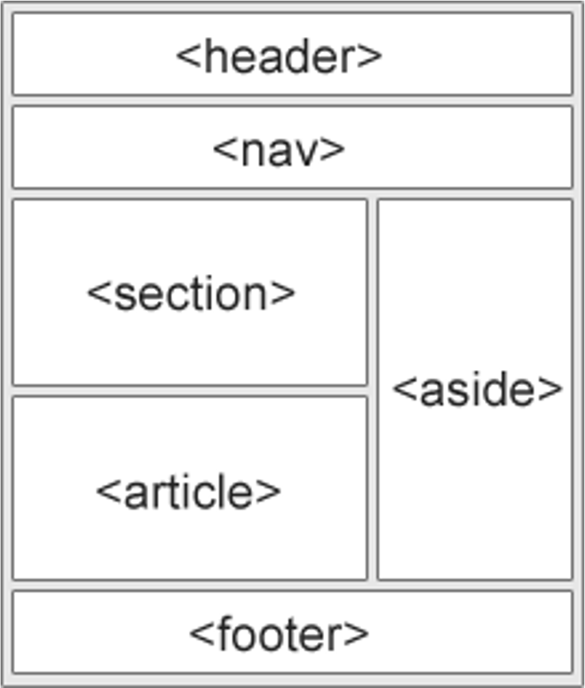

Elementos de Layout
<header> - define um cabeçalho para um documento ou seção
<nav> - Define um contêiner para links de navegação
<section> - Define uma seção em um documento
<article> - Define um artigo independente
<aside> - Define o conteúdo além do conteúdo (como uma barra lateral)
<footer> - define um rodapé para um documento ou seção
